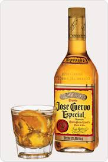

멕시코 음식 문화의 특징
옥수수가 가장 기본적인 식량으로 주식 뿐만 아니라 음료수의 재료로도 쓰입니다 옥수수는 고온지대에서 잘 자라고 오랫동안 저장 가능하다는 장점이 있습니다. 고구마, 콩, 감자, 호박, 땅콩들도 많이 쓰이는 재료입니다. 스페인의 지배를 받은 멕시코는 계피, 마늘, 쌀, 밀, 돼지, 레몬 등을 들여오게 됩니다 오늘날의 멕시코 음식 문화는 아메리카 원주민 음식문화와 스페인 음식 문화의 혼합 으로 탄생하였습니다. 멕시코 사람들은 고추와 마늘을 많이 사용해 자극적이고 매콤한 맛을 냅니다 고추와 향신료가 멕시칸 음식 고유의 풍미를 더해줍니다.
멕시코는 지역별로 음식 문화가 상이합니다. <북부 지역>은 목축이 이루어지는 지역으로 사람들은 육식을 많이 합니다. 목축으로 생산된 양고기, 소고기를 직접 불에 구워 우유와 곁드려 먹습니다. 밀이 재배되어 밀가루 또리띠야를 대량으로 만들어 섭취합니다. <중부 지역>은 고원지대로, 사람들은 양념된 채소를 삶아 먹습니다 이를 닭고기, 돼지고기와 곁들여 섭취합니다. 대표 음식인 몰레는 삶은 닭고기를 몰레 소스를 끼얹는 것인데 잔치 때 많이 먹습니다. <동부 해안가 지역>은 고온 다습한 해안가 지역으로 해물요리가 풍부합니다. 쎄비체는 여러 가지 해물을 레몬즙에 절여서 양파, 토마토, 고추, 고수를 곁들인 요리입니다.
멕시코 대표 음식
- 또르띠야 또르띠야는 옥수수를 물에 불린 후에 으깨서 얇고 넓적하게 편 다음 구운 것입니다. 멕시코 사람들은 또르띠야를 이용해 다양한 음식을 만들어 먹습니다. 타코는 또르띠야를 U자형으로 접어 그 안에 내용물을 넣은 음식입니다. 나초는 또르띠야를 조각 내어 튀긴 것이고, 퀘사디아는 또르띠야로 만든 샌드위치 입니다. 이러한 음식들에 멕시코 사람들은 소스를 첨가해 먹습니다.
- 데낄라 데낄라(tequila)는 8년 정도 자란 마게이의 밑둥을 잘라 익힌 후, 주스를 짜내 여과하여 만드는 증류주입니다. 데낄라는 숙성후 알코올 도수가 38도~40도로 올라갑니다. 데낄라 주에 레몬주스를 넣으면 '마가리타(magarita)'가 됩니다 또한, 데낄라 주에 파인 주스를 넣으면 '피나 콜라다(pinacolada)'가 됩니다. 사람들은 데낄라에 라임조각을 주로 곁들여 먹습니다.
멕시코 소스
-살사(salsa): 양파, 토마토, 고추 등 첨가-구아카몰(guacamole): 아보카도를 갈아서 토마토, 양파, 풋고추 첨가
-사워크림(sour cream):우유의 지방을 새콤하게 발효
-몰레 소스(mole sauce):고추, 초콜릿, 아몬드, 후추, 계피, 토마토를 갈아서 익힘
